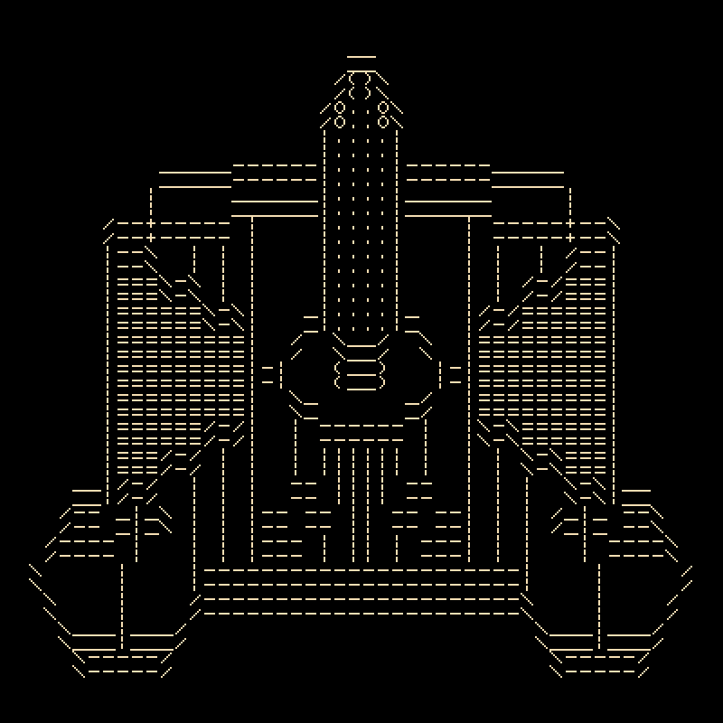

Introduction
TranscendenceRL is a story-rich, real-time, grid-based, ASCII-style, space-opera roguelike set in the universe of George Moromisato's Transcendence.
Backstory
In the Rogue Frontier, war remains unheard and yet ever persistent. Civilizations crumble without a sound. Space is where the Voices of the Core echo their words. To most humans, the words sound like nothing but radio noise. But if someone is (un)lucky enough, one of the Voices might appear to them out of nowhere.
The Orator
Voice of reasonable order
The Dictator
Voice of unreasonable order
The Debater
Voice of reasonable chaos
The Rhetor
Voice of unreasonable chaos
In a dream, you met the Orator and received several visions followed by a simple message: If you want an answer, then travel to the Galactic Core or die trying.
Soon after the dream, you bought yourself a starship and headed over to a nearby outpost of the Followers of the Orator. There, you may find guidance on reaching the Core. What happens next is up to you.
Choose a ship
Buy your first starship and upgrade your weapons, shields, armor, and reactor as you go.
Amethyst-class yacht

A aesthetically-pleasing general-purpose ship for wealthy buyers. The Amethyst strikes a balance between weapon firepower, cargo capacity, and engine power.
Beowulf-class gunship

A combat-oriented ship for highly aggressive pilots. The Beowulf is armed with fast engines and faster lasers.
Wagon-class freighter
A merchant's ship with plenty of space for cargo and devices. The Wagon is armed with an omnidirectional cannon for easy aiming.
Interact with civilizations
There are multiple civilizations, each with their own problems and enemies.
- The United Constellation is your home, cursed with the aggression of warlords and pirates
- The Followers of the Orator is a sect that runs monasteries for the Orator's pilgrims.
- The Orion Warlords hunt Constellation citizens with high-velocity weapons.
- The Iron Pirates sustain themselves by seizing resources from other civilizations
- The Unsung Triad are a gang of rogue transhuman technologists
Travel the stars
Fight your way to the Galactic Core. Dock with wrecks to collect treasure and dock with stations to trade items. Travel across the wide empty space in a way similar to Star Control 2.